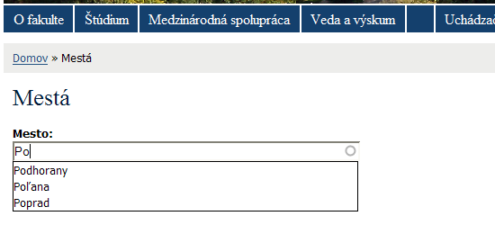

Ako v Drupale na funkciu autocomplete
Určite ste už na rôznych webstránkach videli vo formulároch zaujímavú funkciu – píšete do formulárového políčka a pod ním sa vám automaticky ponúka výber podľa napísaných písmen (napríklad na http://seznam.cz pri vyhľadávaní).

Myslíte si že dosiahnuť niečo podobné v Drupale je ťažké? Vôbec nie. Pokiaľ používate modul Profile, možno ste sa už stretli s tým že sa dá políčko v profile aktivovať ako „autocomplete“ pole. To znamená že ten kto vypĺňa svoj profil, dostane automaticky možnosť výberu z už vložených údajov.

Lenže čo ak chceme mať podobné textové pole s automatickým dopĺňaním vo vlastnom formulári? Pokiaľ máte skúsenosti s programovaním formulárov a jednoduchých modulov v Drupale, viete všetko pre to, aby ste mohli do vlastných výtvorov doplniť rovnakú funkčnosť. Pre zopakovanie si nezabudnite pozrieť tieto články:
- Jak napsat vlastní modul pro Drupal – díl 1.
- Jak napsat vlastní modul pro Drupal – díl 2.
- Jak napsat vlastní modul pro Drupal – díl 3.
V prvom rade si musíme povedať prečo vlastne podobnú funkčnosť potrebujeme. V praxi to môže byť napríklad registračný formulár v ktorom chceme od návštevníka aby zadal nejaký údaj o ktorom si myslíme že ho v budúcnosti môžu zadať aj ďalší návštevníci. Trebárs nech je to mesto. Čo budeme potrebovať?
- údaje s ktorých budeme vyberať, uložené v databáze (môže byť vyplnená od začiatku alebo ju budú postupne dopĺňať sami návštevníci)
hook_menu()v ktorom si nadefinujeme cestu kde sa budú vyberať tieto údaje z databázy- formulár s políčkom v ktorom má automatické dopĺňanie fungovať
- jednoduchú funkciu ktorá nám z databázy bude vyberať údaje podľa písmeniek postupne vpisovaných do formulárového políčka
Celé poskladané dokopy v našom module mesta.module to bude vyzerať takto:
<?php /** * modul Mesta */ /** * implementacia hook menu */ function mesta_menu($may_cache) { $items = array(); if ($may_cache) { // cesta na ktorej sa zobrazi formular so vstupnym polickom // kedze neexistuje ako kliknutelna polozka (pokial si ju niekam nepridate) // volajte ju cez example.com/?q=mesta alebo example.com/mesta $items[] = array( 'path' => 'mesta', 'title' => 'Mestá', 'callback' => 'drupal_get_form', 'callback arguments' => array('mesto_form'), 'access' => TRUE, ); // cesta s autocomplete pre mesta $items[] = array( 'path' => 'mesta/autocomplete', 'title' => 'Autocomplete pre mesta', 'callback' => '_mesta_autocomplete', 'access' => TRUE, 'type' => MENU_CALLBACK ); } return $items; } /** * formular */ function mesto_form() { $form = array(); $form['mesto'] = array( '#type' => 'textfield', '#title' => 'Mesto', '#maxlength' => 128, '#autocomplete_path' => 'mesta/autocomplete', ); $form['pracovisko']['submit'] = array( '#type' => 'submit', '#value' => t('Save'), ); return $form; } /* zapis formulara */ function mesto_form_submit($form_id, $form_values) { db_query("INSERT INTO {mesta} (mesto) VALUES ('%s')", $form_values['mesto']); } /** * pomocna autocomplete funkcia * $string = hladany retazec z policka */ function _mesta_autocomplete($string) { $matches = array(); // vyhladavame v databaze len v stlpci mesto $result = db_query_range("SELECT mesto FROM {mesta} WHERE LOWER(mesto) LIKE LOWER('%s%%')", $string, 0, 10); // najdene udaje ulozime do pola $matches while ($data = db_fetch_object($result)) { $matches[$data->mesto] = check_plain($data->mesto); } // funkcia ktora prevedie vratene udaje do pola ktore vie pouzit JavaScript // zodpovedny za zobrazenie udajov print drupal_to_js($matches); // na konci musime dat exit()! (po vypisani udajov pre JS uz nemusime dalej // vykonavat PHP) exit(); }Súbor pre inštaláciu (a odinštaláciu) modulu mesta.install:
<?php // Vytvorime tabulku pre mesta function mesta_install() { db_query("CREATE TABLE {mesta} (mesto varchar(128) PRIMARY KEY NOT NULL)"); } // Vymazem tabulku mesta function mesta_uninstall() { db_query("DROP TABLE {mesta}"); }A na záver súbor s informáciou o module mesta.info:
; $Id$ name = "Mestá" description = "Testovací modul pre funkciu autocomplete." project = "mesta" version = "5.x-1.x-dev"Funkčný modul vyzerá (po naplnení zopár udajmi) asi takto:
 ZáverTakže toto bolo vaše prvé použitie AJAXu v praxi :). Drupal v sebe obsahuje silnú JavaScript knižnicu JQuery s pomocou ktorej sa dajú jednoducho robiť takéto (a ešte väčšie) triky. Ale o tom možno niekedy nabudúce… A nezabudnite http://api.drupal.org je vás pomocník.
| Příloha | Velikost |
|---|---|
| modul-mesta.tar.gz | 1.25 KB |

Vie mi niekto vysvetlit ako
Vie mi niekto vysvetlit ako je to s tou kniznicou JQuery v Drupale? Obsahuje ju Drupal v zakladnej instalacii?? Kde sa nachadza? Lebo ja som sa v Drupal 5,0 pokusal spojazdnit Lightbox a neslo a neslo. Docital som sa iba ze JQuery Drupal obsahuje. Neskor som nainstaloval JQuery Update. A podla REDAME som vlozil jquery.js do mics/jquery.js a odvtedymi Lightbox funguje. Urobil som pri instalacii Lightboxu chybu, alebo Drupal JQuery neobsahuje???
a nevyzaduje lightbox vyssi
a nevyzaduje lightbox vyssi verzi jquery nez je v D5.x?
To bude najskor tym ze
To bude najskor tym ze aktualna verzia LightBoxu vyzaduje novsiu verziu JQuery a Drupal, v case svojho vydania integroval vtedy aktualnu verziu. Umiestnena je najskor v adresari
inc. Urcite to niekde v nejakom README (ktore sa malokto obtazuje citat) napisane ;).Ozaj vlastne ma napadlo ze LightBox povodne ani s JQuery nefungoval – teraz vsak patram a nasiel som http://www.vectorliving.com/…033-updates/ a tam http://drupal.org/…ct/jlightbox. Cize netusim co vsetko si podnikal ale pri takych kombinaciach sa daju drobne problemy ocakavat… :) Ja pouzivam ThickBox a som spokojny…
A este PS: nakoniec to JQuery je ulozene v adresari
misc–misc/jquery.js. Je to verzia 1.6 (aspon v mojej instalacii Drupalu).Proc si nepouzil ajax na
Proc si nepouzil ajax na toto ? :) on change a uplne jednoduche :)
Ved to je AJAX spolu
Ved to je AJAX spolu s Drupal API… Tu neslo o to vysvetlovat Ajax…
lebo Drupal poskytuje urcite
lebo Drupal poskytuje urcite API, ktere je vlastne nadstavbou AJAXu. takze vysledek je taky AJAX, ale neni to blbe prgani typu „onchange“